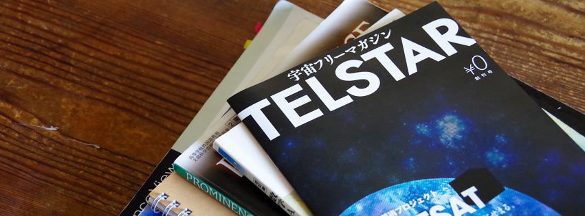
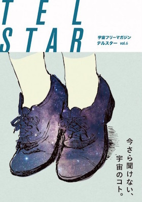
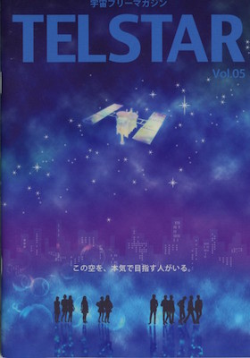
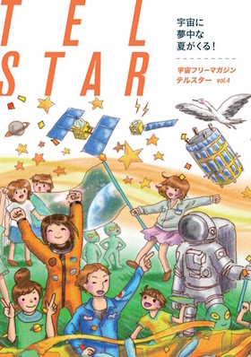
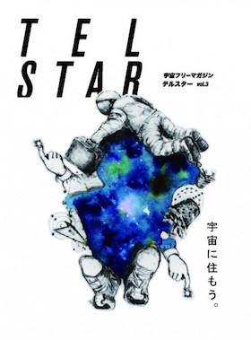
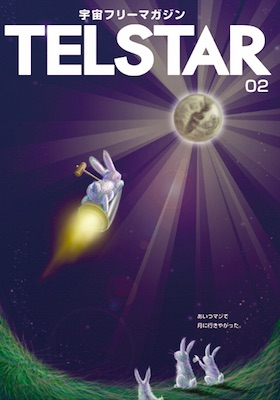
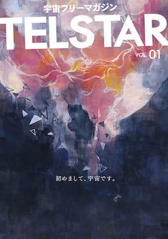
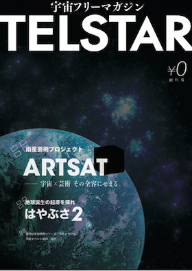

<!DOCTYPE html>
<html>
<head>
  <meta charset="utf-8">
  
  <title>TELSTAR | Frasco</title>
  <meta name="viewport" content="width=device-width, initial-scale=1.0">
  <meta name="description" content="宇宙って、難しくて自分には関係ない分野だと思っていませんか？
宇宙と一口に言っても、その応用分野はさまざまなところに広がっています。
工学・理学だけでなく、エンタテイメント・法学・ビジネス・医学などなど。
あなたが気になっているその分野も、実は宇宙とつながっているかも？
TELSTARをきっかけに、自分と宇宙のつながりを、ちょっと考えてみませんか？
TELSTARは、宇宙を日本の基幹産業にする第一">
<meta property="og:type" content="website">
<meta property="og:title" content="TELSTAR">
<meta property="og:url" content="http://frascokns.github.io/telstar/index.html">
<meta property="og:site_name" content="Frasco">
<meta property="og:description" content="宇宙って、難しくて自分には関係ない分野だと思っていませんか？
宇宙と一口に言っても、その応用分野はさまざまなところに広がっています。
工学・理学だけでなく、エンタテイメント・法学・ビジネス・医学などなど。
あなたが気になっているその分野も、実は宇宙とつながっているかも？
TELSTARをきっかけに、自分と宇宙のつながりを、ちょっと考えてみませんか？
TELSTARは、宇宙を日本の基幹産業にする第一">
<meta property="og:image" content="http://frascokns.github.io/./img/thumbnail.jpg">
<meta property="og:image" content="http://frascokns.github.io/./img/works/TELSTAR-06_s.jpg">
<meta property="og:image" content="http://frascokns.github.io/./img/works/TELSTAR-05_s.jpg">
<meta property="og:image" content="http://frascokns.github.io/./img/works/TELSTAR-04_s.jpg">
<meta property="og:image" content="http://frascokns.github.io/./img/works/TELSTAR-03_s.jpg">
<meta property="og:image" content="http://frascokns.github.io/./img/works/TELSTAR-02_s.jpg">
<meta property="og:image" content="http://frascokns.github.io/./img/works/TELSTAR-01_s.jpg">
<meta property="og:image" content="http://frascokns.github.io/./img/works/TELSTAR-00_s.jpg">
<meta property="og:updated_time" content="2015-05-21T08:43:06.000Z">
<meta name="twitter:card" content="summary">
<meta name="twitter:title" content="TELSTAR">
<meta name="twitter:description" content="宇宙って、難しくて自分には関係ない分野だと思っていませんか？
宇宙と一口に言っても、その応用分野はさまざまなところに広がっています。
工学・理学だけでなく、エンタテイメント・法学・ビジネス・医学などなど。
あなたが気になっているその分野も、実は宇宙とつながっているかも？
TELSTARをきっかけに、自分と宇宙のつながりを、ちょっと考えてみませんか？
TELSTARは、宇宙を日本の基幹産業にする第一">
  
    <link rel="alternative" href="/atom.xml" title="Frasco" type="application/atom+xml">
  
  
    <link rel="icon" href="/favicon.png">
  
  <link rel="stylesheet" href="/css/style.css" type="text/css">
  <link rel="stylesheet" href="/css/lightbox/lightbox.css" type="text/css">
  <!--[if lt IE 9]><script src="//html5shiv.googlecode.com/svn/trunk/html5.js"></script><![endif]-->
  
</head>
<body>
  <div id="container">
    <div class="mobile-nav-panel">
	<i class="icon-reorder icon-large"></i>
</div>
<header id="header">
	<h1 class="blog-title">
		<a href="/">Frasco</a>
	</h1>
	<nav class="nav">
		<ul>
			<li><a href="/about">Frascoについて</a></li><li><a href="/authors">投稿者一覧</a></li><li><a href="/archives">アーカイブ</a></li>
		</ul>
	</nav>
</header>
    <div id="main">
      <article id="page-undefined" class="page">
	<footer class="entry-meta-header">
		<div class="commentscount">
			
		</div>
	</footer>
	
	<header class="entry-header">
		
			
		
		
	
		<h1 class="article-title entry-title" itemprop="name">
			TELSTAR
			
		</h1>
	

		
			<span class="entry-generation">10-14期 – 宇宙フリーマガジン</span>
		
	</header>
	<div class="entry-content">
		
    	<section class="introduction">
<p>宇宙って、難しくて自分には関係ない分野だと思っていませんか？</p>
<p>宇宙と一口に言っても、その応用分野はさまざまなところに広がっています。
工学・理学だけでなく、エンタテイメント・法学・ビジネス・医学などなど。
あなたが気になっているその分野も、実は宇宙とつながっているかも？</p>
<p>TELSTARをきっかけに、自分と宇宙のつながりを、ちょっと考えてみませんか？
TELSTARは、宇宙を日本の基幹産業にする第一歩として、近未来の日本を担う世代に宇宙の魅力を伝えることを目的にしたフリーマガジンです。</p>
<p>宇宙を身近に感じてほしい。
TELSTARは、宇宙とあなたのかけはしを目指しています。</p>
<aside>
<p></p>
<ul>
<li>
<h3>Web</h3>
<a href="http://spacemgz-telstar.com" target="_blank" rel="external">http://spacemgz-telstar.com</a></li>
<li>
<h3>Facebook</h3>
<a href="https://www.facebook.com/spacefreemgz" target="_blank" rel="external">宇宙フリーマガジン「テルスター」</a></li>
<li>
<h3>Twitter</h3>
<a href="https://twitter.com/telstar_freemgz" target="_blank" rel="external">TELSTAR ～宇宙フリーマガジン～</a></li>
</ul>
</aside>
</section>
<section class="gallery">
<h2>バックナンバー</h2>
<div id="container" class="js-masonry">
    <div class="item silver">
        
    </div>
    <div class="item silver">
        
    </div>
    <div class="item silver">
        
    </div>
    <div class="item silver">
        
    </div>
    <div class="item silver">
        
    </div>
    <div class="item silver">
        
    </div>
    <div class="item silver">
        
    </div>
</div>
</section>
<section class="member">
<h2>メンバー</h2>
<ul>
<li><strong>代表</strong>
城戸 彩乃 <span>13期</span></li>
</ul>
<ul>
<li>牟田 梓 <span>10期</span></li>
<li>浅倉 歩 <span>14期</span></li>
</ul>
</section>
<section class="history">
<h2>略歴</h2>
<h3>2013</h3>
<ul>
<li>TELSTAR 設立（2月28日）</li>
<li>「TELSTAR 創刊号」発行</li>
<li>「TELSTAR vol.01」発行</li>
<li>「TELSTAR vol.02」発行</li>
<li>Student Freepaper Forum 2013 – グランプリ受賞</li>
</ul>
<h3>2014</h3>
<ul>
<li>「TELSTAR vol.03」発行</li>
<li>「TELSTAR vol.04」発行</li>
<li>「TELSTAR vol.05」発行</li>
</ul>
<h3>2015</h3>
<ul>
<li>みんなの夢AWARD5 フリーペーパーAWARDの部 – グランプリ受賞</li>
<li>「TELSTAR vol.06」発行</li>
</ul>
</section>
<section>
<h2>どこで読めるの?</h2>
<h3>TELSTARを読む方法は主に3つ</h3>
<ol>
<li>高校や科学館で置いていないか探す</li>
<li>MAGAZINEページの無料PDFを読む</li>
<li>定期購読に申し込む</li>
</ol>
<h3>定期購読を受け付けています</h3>
<p>今（2015/04/20〜）定期購読にお申込みいただくと、5月中旬に発行されるTELSTAR vol.7からお届けします。
料金は4冊分、約1年を予定しております。</p>
<h3>定期購読要項</h3>
<table>
<thead>
<tr>
<th>料金</th>
<th>1000円/4冊（高校生以下は無料）</th>
</tr>
</thead>
<tbody>
<tr>
<td>配送開始</td>
<td>5月中旬発行の7号からお届け</td>
</tr>
<tr>
<td>配送期間</td>
<td>6号から4冊分、約1年を予定</td>
</tr>
<tr>
<td>申し込み</td>
<td><a href="https://docs.google.com/forms/d/1-Be6EEU-MrOM104odM82D7NWMuwibQNnRLMb4lY_pPI/edit" target="_blank" rel="external">定期購読申込みフォーム - TELSTAR</a></td>
</tr>
</tbody>
</table>
<footer>
<p>TELSTAR公式サイトでは無料PDFファイルを公開中です。<br>
<a href="http://spacemgz-telstar.com/?page_id=10" target="_blank" rel="external">MAGAZINE - TELSTAR</a></p>
</footer>
</section>

    
	</div>
	<footer class="entry-footer">
		<div class="entry-meta-footer">
			<span class="category">
				
			</span>
			<span class="tags">
				
			</span>
		</div>
	</footer>
	
    
  
</article>


    </div>
    <div class="mb-search">
  <form action="//google.com/search" method="get" accept-charset="utf-8">
    <input type="search" name="q" results="0" placeholder="Search">
    <input type="hidden" name="q" value="site:frascokns.github.io">
  </form>
</div>
<footer id="footer">
	<h1 class="footer-blog-title">
		<a href="/">Frasco</a>
	</h1>
	<span class="copyright">
		&copy; 2015 Frasco<br>
		Modify from <a href="http://sanographix.github.io/tumblr/apollo/" target="_blank">Apollo</a> theme, designed by <a href="http://www.sanographix.net/" target="_blank">SANOGRAPHIX.NET</a><br>
		Powered by <a href="http://hexo.io/" target="_blank">Hexo</a>
	</span>
</footer>
    

<script src="/js/masonry.pkgd.min.js"></script>
<script src="/js/lightbox.min.js"></script>
<script>
var lightbox = new Lightbox();
lightbox.load();
</script>
<script src="//ajax.googleapis.com/ajax/libs/jquery/2.0.3/jquery.min.js"></script>


<script src="/js/script.js" type="text/javascript"></script>
  </div>
</body>
</html>